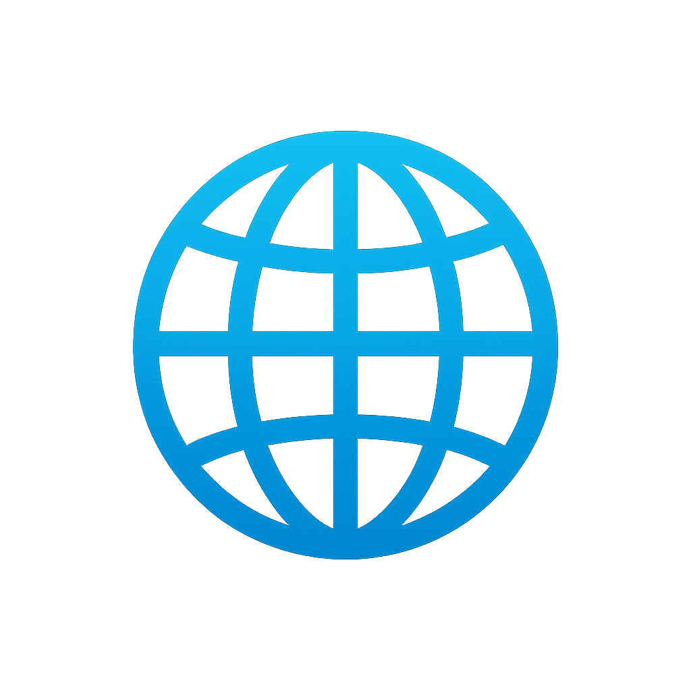

Découvre ton avenir en génie !
 Explorer les Possibilités Universitaires Après la technique "420-B"
Ce site web présente les différentes avenues universitaires qui s’offrent aux étudiants du programme 420-B désireux de poursuivre leurs études en génie. Grâce à votre formation en informatique, plusieurs domaines techniques deviennent accessibles et constituent des choix logiques et avantageux. Vous y découvrirez quatre types de génie parmi les plus pertinents aujourd’hui : le génie informatique, le génie logiciel, le génie électrique et le génie des systèmes intelligents. Chaque section décrit les objectifs du programme, les compétences que vous y développerez, ainsi que les perspectives professionnelles associées. L’objectif est de vous aider à mieux comprendre ce qui distingue ces différentes branches du génie afin de vous orienter vers un parcours qui correspond à vos intérêts et à votre profil. Que vous soyez attiré par la programmation avancée, la conception de matériel, la cybersécurité ou l’intelligence artificielle, ce site vous offre une vision claire des possibilités qui s’offrent à vous après votre DEC en informatique.